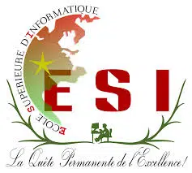

A propos
L’objectif de cette application est d’annoté des données multimédias en langue Africaines dans l’optique de constituer une base de données qui pourrait être utilisé comme source de donnée pour créer des intelligences artificielles (IA) reflétant les réalités Africaines.
Toutes intelligences artificielles peu import sa nature se crée à partir de grosse quantité de donnée. Cette exigence est une réelle problématique pour toutes IA développées partout dans le monde et en particulier en
Afrique ou le développement technologique est en plein expansion. D’où la nécessité de cette application.
Ensemble relevons le défi technologique en Afrique.
Contactez-nous

ESI
Contact
UNB
Contact